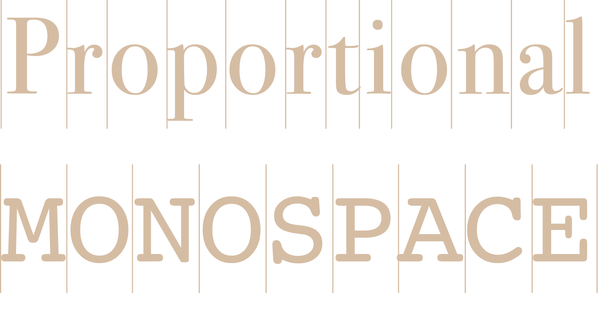
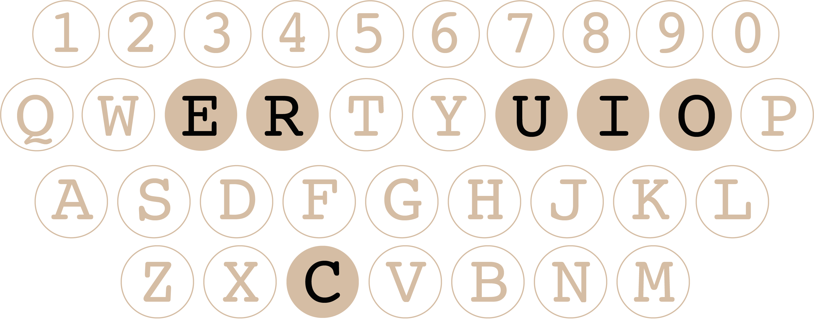

Monospaced font is a font family that is commonly seen in programming development. However, the font was not developed for programming only even though it is designed for utilitarian and sturdy rather than for advertising or decoration. To discuss the development of monospaced fonts. We need to figure out how typewriters work, because the monospaced fonts were born from the limitations of mechanical typewriters.
When the typist pressed a key, the carriage moved the paper the same distance each time, so it was easier to return to a previous printing point to make corrections and do tabulation work.
Just as its name is expressed, monospaced fonts are fonts in which all characters have the same amount of horizontal space. Monospaced fonts were used on typewriters at first because the equal breadth feature allowed typewriters carriage to move the paper the same distance each time when a typist pressed a key, which made the writing process smoothly. Monospaced fonts thrived in the twenty century, a period in which typewriters were widely used in offices and homes. Many monospaced fonts were designed in the first half of the 20th century. Most companies had their own Pica typeface, a monospaced font that fit ten characters to the inch. Among all the monospaced typefaces, Courier, a font released in the year 1956 designed by Howard "Bud" Kettler for IBM's typewriters became the most famous one. By the 1960s, a few years after Courier published, the font became so popular that you could find it almost every where-from screenplays to formal documents.

Typewriters were a standard fixture in most offices up to the 1980s. Thereafter, they began to be largely supplanted by personal computers running word processing software. However, monospaced fonts were still a trend. The fonts could easily migrate to phototypesetting technology; they were widely used in computers, especially Courier-it was one of the handfuls of fonts available on personal computers. More importantly, monospaced fonts were used in programming languages. The font family again benefits from its same-breadth feature, thriving in the coding area, just as it was popular on typewriters.